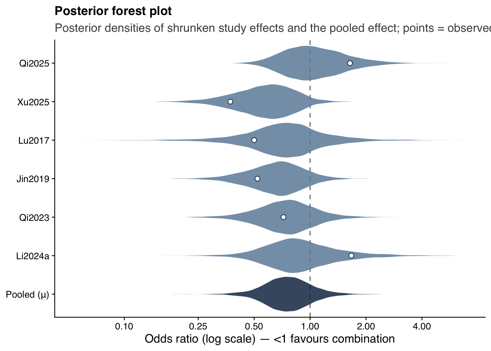
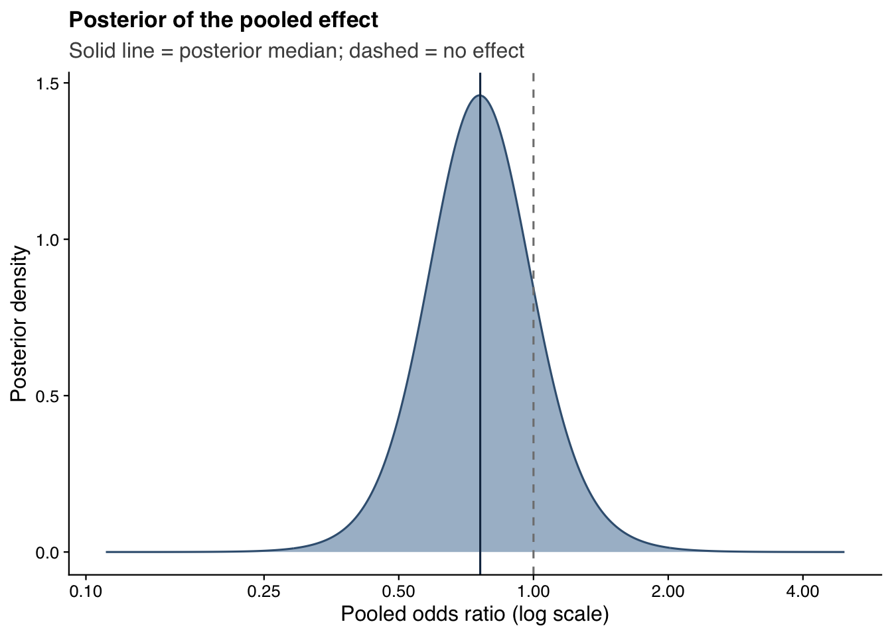
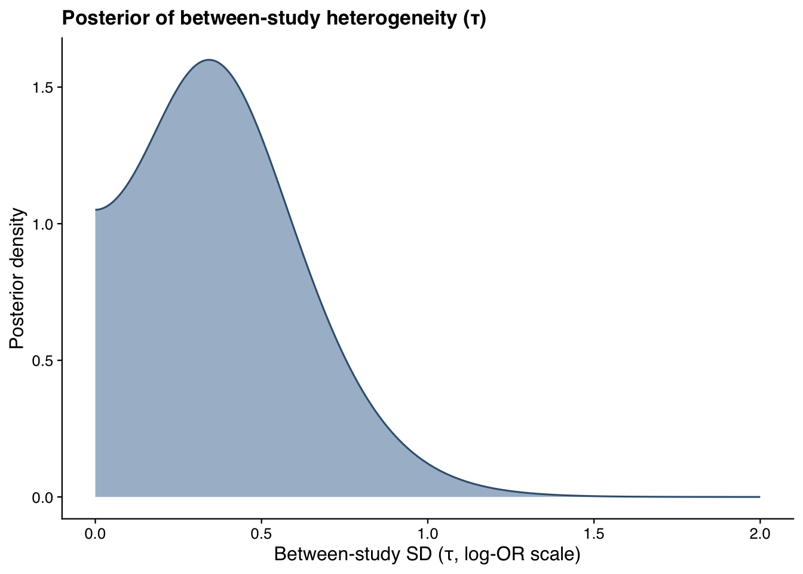
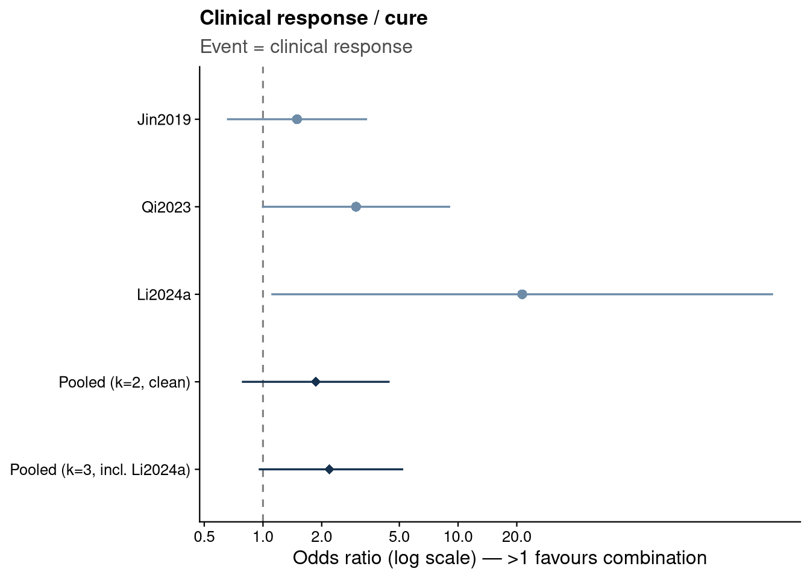

Show code
source("analysis/meta_helpers.R")
ma <- load_ma()
bm_primary <- fit_bm(dplyr::filter(ma, tier == "primary"))
bm_sens <- fit_bm(ma)We fit a Bayesian random-effects (normal-normal) model to the per-study log odds ratios, with weakly informative priors: a N(0, 1.5) prior on the pooled log-OR and a half-normal(0.5) prior on the between-study standard deviation τ. The posterior is computed semi-analytically with bayesmeta (an independent MCMC refit and its convergence diagnostics are on the Model fit & MCMC page).
tibble(
Analysis = c("Primary (in-hospital / ~30-day)", "Sensitivity (+ longer timepoints)"),
Studies = c(bm_primary$k, bm_sens$k),
OR = c(or_ci(bm_primary)[1], or_ci(bm_sens)[1]),
`CrI lower` = c(or_ci(bm_primary)[2], or_ci(bm_sens)[2]),
`CrI upper` = c(or_ci(bm_primary)[3], or_ci(bm_sens)[3]),
`P(OR<1)` = c(bm_primary$pposterior(mu = 0), bm_sens$pposterior(mu = 0))
) |>
mutate(across(where(is.numeric), ~round(.x, 2))) |>
knitr::kable()| Analysis | Studies | OR | CrI lower | CrI upper | P(OR<1) |
|---|---|---|---|---|---|
| Primary (in-hospital / ~30-day) | 3 | 0.78 | 0.31 | 1.93 | 0.72 |
| Sensitivity (+ longer timepoints) | 6 | 0.76 | 0.43 | 1.37 | 0.84 |
The sensitivity-analysis pooled odds ratio is 0.76 (95% CrI 0.43–1.37), with a posterior probability of benefit (OR < 1) of 0.84. The estimate points toward a mortality reduction but the credible interval includes no effect.
Each row shows the posterior distribution of the study-specific (shrunken) odds ratio; open points mark the observed estimates. The bottom row is the posterior of the pooled effect μ.
set.seed(7183)
ps <- bm_sens$rposterior(n = 4000) # columns: tau, mu (log-OR scale)
# Conditional posterior of each study's true effect given (mu, tau, y_i, sei_i)
theta_draws <- purrr::map_dfr(seq_len(nrow(ma)), function(i) {
pd <- 1 / ma$sei[i]^2 # data precision
pp <- 1 / ps[, "tau"]^2 # prior (between-study) precision
v <- 1 / (pd + pp)
m <- v * (ma$yi[i] * pd + ps[, "mu"] * pp)
tibble(label = ma$study[i], draw = exp(rnorm(nrow(ps), m, sqrt(v))))
})
pooled_draws <- tibble(label = "Pooled (\u03bc)", draw = exp(ps[, "mu"]))
alldraws <- bind_rows(theta_draws, pooled_draws) |>
mutate(label = factor(label, levels = rev(c(ma$study, "Pooled (\u03bc)"))),
is_pooled = label == "Pooled (\u03bc)")
obs <- ma |> transmute(label = factor(study, levels = levels(alldraws$label)), OR)
ggplot(alldraws, aes(draw, label)) +
geom_vline(xintercept = 1, linetype = "dashed", color = "grey50") +
geom_violin(aes(fill = is_pooled), orientation = "y", color = NA,
scale = "width", alpha = 0.85) +
geom_point(data = obs, aes(OR, label), shape = 21, fill = "white",
color = jama_blue_grey[["dark"]], size = 2) +
scale_x_log10(breaks = c(0.1, 0.25, 0.5, 1, 2, 4)) +
scale_fill_manual(values = c(`FALSE` = jama_blue_grey[["medium"]],
`TRUE` = jama_blue_grey[["accent"]]), guide = "none") +
labs(x = "Odds ratio (log scale) \u2014 <1 favours combination", y = NULL,
title = "Posterior forest plot",
subtitle = "Posterior densities of shrunken study effects and the pooled effect; points = observed ORs") +
theme_jama()
mu_grid <- seq(-2.2, 1.6, length.out = 500)
tibble(OR = exp(mu_grid), density = bm_sens$dposterior(mu = mu_grid)) |>
ggplot(aes(OR, density)) +
geom_area(fill = jama_blue_grey[["light"]], color = jama_blue_grey[["steel"]]) +
geom_vline(xintercept = 1, linetype = "dashed", color = "grey50") +
geom_vline(xintercept = or_ci(bm_sens)[1], color = jama_blue_grey[["accent"]]) +
scale_x_log10(breaks = c(0.1, 0.25, 0.5, 1, 2, 4)) +
labs(x = "Pooled odds ratio (log scale)", y = "Posterior density",
title = "Posterior of the pooled effect",
subtitle = "Solid line = posterior median; dashed = no effect") +
theme_jama()
tau_grid <- seq(0, 2, length.out = 500)
tibble(tau = tau_grid, density = bm_sens$dposterior(tau = tau_grid)) |>
ggplot(aes(tau, density)) +
geom_area(fill = jama_blue_grey[["light"]], color = jama_blue_grey[["steel"]]) +
labs(x = "Between-study SD (\u03c4, log-OR scale)", y = "Posterior density",
title = "Posterior of between-study heterogeneity (\u03c4)") +
theme_jama()
The heterogeneity posterior has substantial mass away from zero, consistent with the moderate I² seen in the frequentist analysis, but is imprecise given only six small studies.
Beyond the odds ratio, two further summaries aid interpretation: the absolute risk difference (with the implied number needed to treat) and a 95% prediction interval — the range within which the true effect of a new study would be expected to fall. The prediction interval accounts for between-study heterogeneity and is therefore wider than the credible interval for the mean effect.
# Risk difference (Bayesian): mu ~ N(0, 0.5), tau ~ half-normal(0.2) on the RD scale
maRD <- escalc(measure = "RD", ai = e_comb, n1i = n_comb, ci = e_ref, n2i = n_ref,
data = ma, slab = study)
maRD$sei <- sqrt(maRD$vi)
bm_rd <- bayesmeta(y = maRD$yi, sigma = maRD$sei, labels = maRD$study,
mu.prior = c(mean = 0, sd = 0.5),
tau.prior = function(t) dhalfnormal(t, scale = 0.2))
rd <- bm_rd$summary[, "mu"]
# 95% prediction interval (OR scale) from the odds-ratio model's predictive distribution
pred <- exp(bm_sens$qposterior(mu.p = c(0.025, 0.975), predict = TRUE))
tibble(
Quantity = c("Pooled odds ratio", "Risk difference", "Number needed to treat (point)",
"95% prediction interval (OR)"),
Estimate = c(fmt(bm_sens),
sprintf("%.1f%% (95%% CrI %.1f%% to %.1f%%)",
100 * rd["median"], 100 * rd["95% lower"], 100 * rd["95% upper"]),
sprintf("%.0f (to prevent one death)", 1 / abs(rd["median"])),
sprintf("%.2f to %.2f", pred[1], pred[2]))
) |> knitr::kable()| Quantity | Estimate |
|---|---|
| Pooled odds ratio | 0.76 (95% CrI 0.43–1.37) |
| Risk difference | -6.2% (95% CrI -21.0% to 8.9%) |
| Number needed to treat (point) | 16 (to prevent one death) |
| 95% prediction interval (OR) | 0.24 to 2.44 |
The pooled risk difference is about 6 fewer deaths per 100 patients, but its credible interval spans benefit and harm, so the point NNT of 16 is highly uncertain. The prediction interval (OR 0.24-2.44) is the key caution: in a new setting the true effect could plausibly range from a substantial mortality reduction to a doubling of the odds of death.
Three studies report clinical response/cure for both arms. Here the event is a good outcome, so an odds ratio above 1 favours combination therapy.
resp <- tribble(
~study, ~e_comb, ~n_comb, ~e_ref, ~n_ref, ~confounded,
"Jin2019", 24, 35, 54, 91, FALSE,
"Qi2023", 33, 43, 11, 21, FALSE,
"Li2024a", 20, 20, 12, 18, TRUE)
respE <- escalc(measure = "OR", ai = e_comb, n1i = n_comb, ci = e_ref, n2i = n_ref,
data = resp, slab = study)
respE$sei <- sqrt(respE$vi); respE$OR <- exp(respE$yi)
bm_resp_clean <- fit_bm(filter(respE, !confounded))
bm_resp_all <- fit_bm(respE)
respE |>
transmute(Study = study,
`Response (comb)` = paste0(e_comb, "/", n_comb),
`Response (mono)` = paste0(e_ref, "/", n_ref),
OR = round(OR, 2),
Note = ifelse(confounded, "confounded; 20/20 \u2192 implausible outlier", "")) |>
knitr::kable()| Study | Response (comb) | Response (mono) | OR | Note |
|---|---|---|---|---|
| Jin2019 | 24/35 | 54/91 | 1.49 | |
| Qi2023 | 33/43 | 11/21 | 3.00 | |
| Li2024a | 20/20 | 12/18 | 21.32 | confounded; 20/20 → implausible outlier |
Excluding the confounded Li2024a (whose 20/20 response yields an implausible OR 248 21), the pooled response odds ratio is 1.87 (95% CrI 0.78–4.46); including it, 2.19 (95% CrI 0.95–5.24). The direction favours combination therapy and is consistent with Yang et al.’s reported response benefit (OR 2.30), but our smaller set does not reach conclusiveness (the credible interval includes 1).
est <- respE |>
transmute(label = study, kind = "study",
OR = exp(yi), lo = exp(yi - 1.96 * sei), hi = exp(yi + 1.96 * sei))
pool <- tibble(label = c("Pooled (k=2, clean)", "Pooled (k=3, incl. Li2024a)"), kind = "pooled",
OR = c(or_ci(bm_resp_clean)[1], or_ci(bm_resp_all)[1]),
lo = c(or_ci(bm_resp_clean)[2], or_ci(bm_resp_all)[2]),
hi = c(or_ci(bm_resp_clean)[3], or_ci(bm_resp_all)[3]))
bind_rows(est, pool) |>
mutate(label = factor(label, levels = rev(c("Jin2019", "Qi2023", "Li2024a",
"Pooled (k=2, clean)", "Pooled (k=3, incl. Li2024a)")))) |>
ggplot(aes(OR, label, color = kind)) +
geom_vline(xintercept = 1, linetype = "dashed", color = "grey50") +
geom_pointrange(aes(xmin = lo, xmax = hi, shape = kind == "pooled"), linewidth = 0.6) +
scale_x_log10(breaks = c(0.5, 1, 2, 5, 10, 20)) +
scale_color_manual(values = c(study = jama_blue_grey[["medium"]],
pooled = jama_blue_grey[["accent"]]), guide = "none") +
scale_shape_manual(values = c(16, 18), guide = "none") +
labs(x = "Odds ratio (log scale) \u2014 >1 favours combination", y = NULL,
title = "Clinical response / cure", subtitle = "Event = clinical response") +
theme_jama()
re_resp_all <- rma(yi, vi, data = respE, method = "REML")
re_resp_cln <- rma(yi, vi, data = dplyr::filter(respE, !confounded), method = "REML")
tibble(
Set = c("Clean (k=2)", "All (k=3, incl. Li2024a)"),
`I^2 (%)` = round(c(re_resp_cln$I2, re_resp_all$I2)),
`tau^2` = round(c(re_resp_cln$tau2, re_resp_all$tau2), 2),
`Q (df), p` = c(sprintf("%.1f (%d), %.3f", re_resp_cln$QE, re_resp_cln$k - 1, re_resp_cln$QEp),
sprintf("%.1f (%d), %.3f", re_resp_all$QE, re_resp_all$k - 1, re_resp_all$QEp)),
`Pooled OR (95% CrI)` = c(fmt(bm_resp_clean), fmt(bm_resp_all))
) |> knitr::kable()| Set | I^2 (%) | tau^2 | Q (df), p | Pooled OR (95% CrI) |
|---|---|---|---|---|
| Clean (k=2) | 0 | 0.00 | 1.0 (1), 0.324 | 1.87 (95% CrI 0.78–4.46) |
| All (k=3, incl. Li2024a) | 25 | 0.14 | 3.4 (2), 0.183 | 2.19 (95% CrI 0.95–5.24) |
| Study removed | OR | 95% CrI |
|---|---|---|
| Jin2019 | 3.31 | 1.01–10.84 |
| Qi2023 | 1.87 | 0.65–5.80 |
| Li2024a | 1.87 | 0.78–4.46 |
Among the two unconfounded studies there is no detectable heterogeneity (I² = 0); the modest heterogeneity in the k = 3 set comes entirely from Li2024a, whose near-separation 20/20 response inflates both its odds ratio and the between-study variance. Leave-one-out confirms the fragility — the pooled interval excludes 1 only when Jin2019 is dropped (leaving Qi2023 with the Li2024a outlier), whereas removing the confounded Li2024a returns the stable clean estimate. The response signal favours combination directionally but stays inconclusive.
li_or <- function(a) exp(escalc(measure = "OR", ai = 20, n1i = 20, ci = 12, n2i = 18,
add = a, to = "only0")$yi)
tibble(
`Continuity correction` = c("add = 0 (none)", "add = 0.5 (default)"),
`Li2024a response OR` = c("undefined (\u221e; 0 failures)", sprintf("%.1f", li_or(0.5))),
`k = 3 pooled OR` = c(paste0(fmt(bm_resp_clean), " (Li2024a excluded)"), fmt(bm_resp_all))
) |> knitr::kable()| Continuity correction | Li2024a response OR | k = 3 pooled OR |
|---|---|---|
| add = 0 (none) | undefined (∞; 0 failures) | 1.87 (95% CrI 0.78–4.46) (Li2024a excluded) |
| add = 0.5 (default) | 21.3 | 2.19 (95% CrI 0.95–5.24) |
Li2024a’s combination arm has zero treatment failures (20/20), so its odds ratio is undefined without a continuity correction. Under the conventional add-0.5 correction it becomes ≈ 21 with an enormous interval, which pulls the k = 3 pooled OR up to 2.19; drop the correction (add = 0) and the study cannot enter an odds-ratio synthesis at all, leaving the clean k = 2 estimate of 1.87. The apparent response benefit contributed by Li2024a is thus an artefact of the continuity correction, reinforcing the clean two-study estimate as the trustworthy summary.
Need for mechanical ventilation is reported by several studies, but source verification found the figures are recorded inconsistently — largely as baseline or course-of-illness severity (need for ventilation at some point during the ICU stay) rather than a clearly-timed post-treatment event, and none of the studies time ventilation relative to treatment start. It is therefore not pooled here.